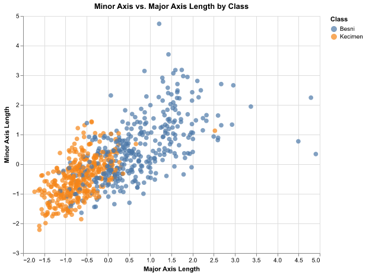
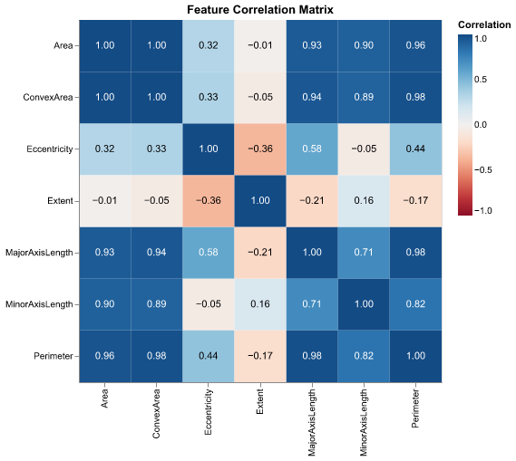
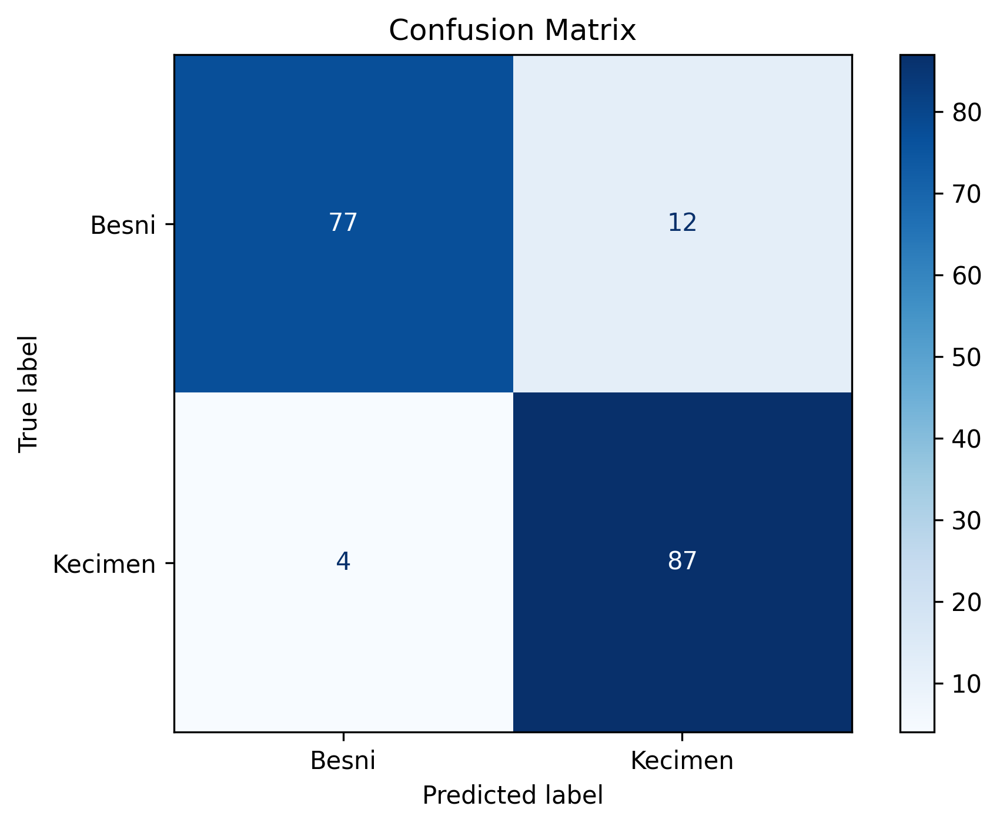
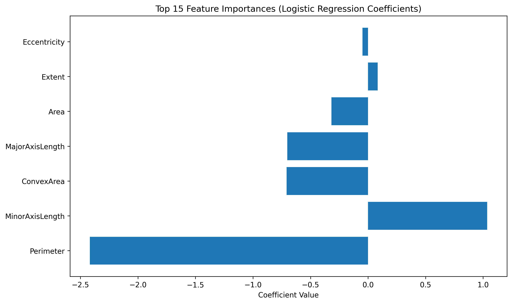

| Column | Non-Null Count | Dtype | |
|---|---|---|---|
| Area | Area | 900 | int64 |
| MajorAxisLength | MajorAxisLength | 900 | float64 |
| MinorAxisLength | MinorAxisLength | 900 | float64 |
| Eccentricity | Eccentricity | 900 | float64 |
| ConvexArea | ConvexArea | 900 | int64 |
| Extent | Extent | 900 | float64 |
| Perimeter | Perimeter | 900 | float64 |
Crazy Raisins: A Raisin Classification Adventure
1 Summary
In this project, we built a classification model using logistic regression to predict raisin varieties—Besni and Kecimen—based on morphological measurements extracted from digitized raisin images. Several of the size-related features, such as Area, Perimeter, MajorAxisLength, and ConvexArea, were found to be strongly correlated. This suggests redundancy among these predictors, whereas features like Eccentricity and Extent provide more distinct shape information that may help refine classification.
Our model achieved an accuracy of 0.911 and a weighted F1 score of 0.911, indicating strong and balanced performance across both classes. The similarity of these two metrics suggests that the class distribution is not heavily skewed. However, the correlation heatmap shows that size-based measurements dominate the feature set, which could cause the model to over-rely on redundant information and increase the risk of overfitting.
The confusion matrix reveals that while the model performs well overall, some misclassifications occur where the two raisin types have overlapping visual characteristics. This is expected in real-world applications, where similar shape profiles can blur the distinction between varieties.
This classifier has practical implications for quality control in agriculture and food processing, where automated classification could reduce labor costs, improve consistency, and minimize human error. At the same time, misclassifications highlight the need for caution in applications involving labeling or pricing decisions.
Future work may include investigating which features contribute most to the model’s decisions, incorporating additional measurements such as color or texture, and experimenting with alternative machine learning algorithms. Evaluating the model’s generalizability on new raisin batches is also essential to ensure it performs reliably beyond this dataset.
2 Introduction
Raisins are dried grapes, and like their fresh counterparts, different varieties vary in taste, texture, sweetness, and appearance. Beyond being a common snack, raisins are associated with various health benefits, such as increased raisin consumption has been linked to improved diet quality and reduced appetite (Olmo-Cunillera et al. 2019). Accurately identifying raisin varieties can be useful in food processing, quality control, and consumer preference studies.
The dataset used in this project consists of morphological measurements extracted from images of 900 raisins belonging to the Besni and Kecimen varieties, obtained from the UCI Machine Learning Repository. Each sample includes seven numerical features describing the size and shape of a raisin.
2.1 Background
Morphological measurements, such as area, perimeter, and axis lengths, capture important geometric properties that may distinguish different raisin types. Because these biological shapes vary naturally, analyzing their quantitative characteristics can reveal patterns that are not easily detectable by simple visual inspection.
2.2 Motivation
Our goal is to determine whether raisin variety can be accurately predicted using these measured properties. If successful, this type of model could support automated inspection systems in agriculture and food processing, reduce human error, and help standardize quality control. This analysis also helps us understand which features are most informative and whether logistic regression is an appropriate model for this classification task.
3 Methods
3.1 Data
The dataset used in this project consists of digitized raisin images provided by İ̇lkay Çınar, Murat Koklu, and Şakir Taşdemir from Selçuk University (Çinar, Koklu, and Tasdemir 2019). The dataset is available through the UCI Machine Learning Repository and was imported using the ucimlrepo Python library. The data can be obtained from [here]. Each observation corresponds to a single raisin and includes seven numerical features capturing its morphological properties. Every raisin belongs to one of two varieties: Besni or Kecimen.
A standard 75%/25% train–test split was used to create separate datasets for model training and evaluation
Table 1 provides a high-level summary of the dataset structure:
Table 2 provides the descriptive statistics for the numerical features:
| Area | MajorAxisLength | MinorAxisLength | Eccentricity | ConvexArea | Extent | Perimeter | |
|---|---|---|---|---|---|---|---|
| count | 900 | 900 | 900 | 900 | 900 | 900 | 900 |
| mean | 87804.1 | 430.93 | 254.488 | 0.781542 | 91186.1 | 0.699508 | 1165.91 |
| std | 39002.1 | 116.035 | 49.9889 | 0.0903184 | 40769.3 | 0.0534682 | 273.764 |
| min | 25387 | 225.63 | 143.711 | 0.34873 | 26139 | 0.379856 | 619.074 |
| 25% | 59348 | 345.443 | 219.111 | 0.741766 | 61513.2 | 0.670869 | 966.411 |
| 50% | 78902 | 407.804 | 247.848 | 0.798846 | 81651 | 0.707367 | 1119.51 |
| 75% | 105028 | 494.187 | 279.889 | 0.842571 | 108376 | 0.734991 | 1308.39 |
| max | 235047 | 997.292 | 492.275 | 0.962124 | 278217 | 0.835455 | 2697.75 |
3.2 Analysis
The LogisticRegression algorithm was used to build the classification model to predict the species of a raisin given its measured shape properties. The data was split 75% into training set and 25% into test set. We obtained an accuracy of {{accuracy}} with our model, , indicating strong performance given the simplicity of the model.
4 Exploratory Data Analysis
We began our EDA by visualizing the two major axis measurements. The scatterplot in Figure 1 shows visible separation between the two raisin varieties based on these measurements.

Next, the Pearson correlation matrix shown in Figure 2 reveals strong correlations among size-related features such as Area, Perimeter, and ConvexArea. These relationships suggest redundancy among size metrics and highlight the importance of including shape-based descriptors.

The dataset contains a nearly even number of Besni and Kecimen raisins, as shown in Figure 3. This balance is beneficial for classification performance because it reduces the risk of a model over-emphasizing one class.

5 Results
The confusion matrix for the Logistic Regression classifier (Figure 4) shows that the model performs strongly overall but exhibits slightly better performance for the Kecimen class. Misclassifications occur in both directions, suggesting that some raisins share similar morphological properties that make them difficult to distinguish.

The feature coefficient plot (Figure 5) highlights which variables contribute most strongly to the model’s predictions. Since Logistic Regression coefficients reflect the importance of standardized features, the magnitude of each bar indicates how strongly that feature influences classification. Size-related features appear dominant, reinforcing earlier observations from the correlation matrix.

The model had an accuracy of 0.911 and a weighted f1 score of 0.911 .
6 Discussion
Overall, the Logistic Regression classifier was effective at distinguishing between Besni and Kecimen raisins, achieving high accuracy and balanced performance across classes. The results support the idea that size-based features, such as Area, Perimeter, and ConvexArea, play a major role in classification. However, because these measurements are highly correlated, the model may rely too heavily on redundant information, which could limit generalizability.
The confusion matrix suggests that some samples possess overlapping characteristics that blur the distinction between varieties. This is expected, because if two raisins share similar shape and size profiles, a linear classifier may struggle to separate them cleanly. Incorporating less correlated features such as texture, color, or weight could help the model capture subtle differences that the current dataset does not include.
Future improvements may include feature engineering to capture non-linear models, training other models such as Tandom FOrests and SVMs, and hyperparameter turning if it is relevant for the chosen model.
These findings indicate that while the current model performs well for basic classification, there is strong potential for further improvement with more sophisticated modeling techniques and a richer feature set.
7 References
Çinar, İ̇lkay, Murat Koklu, and Sakir Tasdemir. 2019. “Raisin Dataset.” https://archive.ics.uci.edu/dataset/850/raisin.
Olmo-Cunillera, Alexandra et al. 2019. “Is Eating Raisins Healthy?” Nutrients 12 (1): 54. https://doi.org/10.3390/nu12010054.